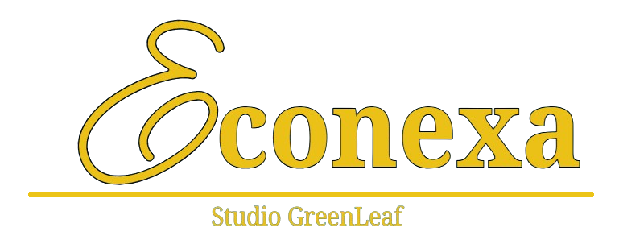
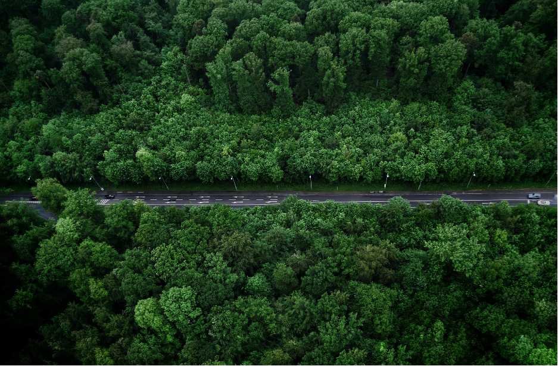
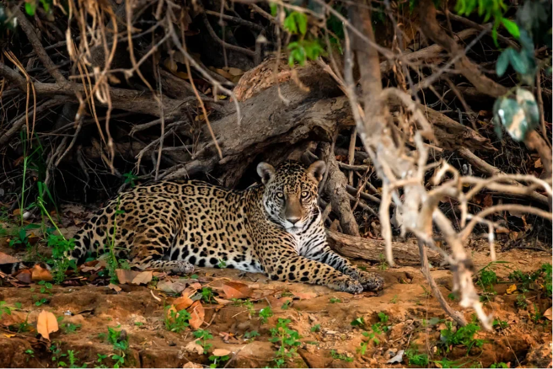

Larissa Silva
Pequenas atitudes fazem grandes mudanças: recicle hoje e cuide do futuro do planeta
Brenda Peixer

Bem-vindos
O Econexa é uma plataforma criada para incentivar a sustentabilidade e facilitar a participação da comunidade em ações ambientais. Aqui você encontra informações sobre arrecadações de reciclagem, descarte correto de resíduos, compostagem e energias renováveis. Além disso, o site oferece visibilidade para campanhas de arrecadação e um fórum de ideias, onde os usuários podem compartilhar sugestões, experiências e iniciativas.

Sobre o
projeto
O Econexa conecta pessoas, empresas e instituições que desejam descartar materiais recicláveis corretamente, contribuindo para a preservação do meio ambiente.
O que arrecadamos?
- Papel e papelão;
- Tampas de garrafas plásticas;
- Lacres de alumínio;
- Lixos eletrônicos.
Por que participar?
Sua participação faz a diferença! Ao separar e doar materiais recicláveis, você ajuda a reduzir a poluição, preserva os recursos naturais, incentiva a reciclagem e contribui para a construção de um planeta mais limpo e sustentável. Juntos, podemos transformar pequenas atitudes em grandes mudanças.
Pesquisadores
- Larissa Silva
- Brenda Peixer
- Isabela São
- Maria Sofia Costa
- Marco Antônio
- Simon Schwarz
- Samuel Schwarz
- Bruno Oliveira
- Adrian Lima
- José Schlichting
- Julio Oliveira
- Noah De Souza
- Natalie Chaves
- Antony Wolf
- Kauan Silva
- Patrícia Oliboni
Por Que Ser Sustentável?
Adotar um estilo de vida sustentável é uma das formas mais poderosas de proteger o meio ambiente e melhorar a qualidade de vida de todos. Quando cuidamos da natureza, cuidamos também da nossa saúde, do nosso futuro e das próximas gerações.
A sustentabilidade começa com escolhas conscientes. E começa agora.